老司机教你精选商品，拒绝翻车
刚建立了自己的微信推广群，正在为如何给粉丝们挑选高性价比商品发愁？无需担心！本节课程为大家介绍：轻松几招，挑选高品质商品。拒绝翻车，我们是认真的！
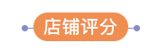
店铺评分反映了店铺的健康度，主要包括三部分：描述评分（实际收货商品与描述的相符程度）；物流评分（商品发货快慢等）；服务评分（商家客服的服务水平）；如果一个商品所在店铺三种评分皆显示为高，则说明该商品具有较高的可靠性
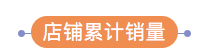
店铺的累积销量高低反映了商品的受欢迎程度和店铺的成熟度。累积销量越高，往往说明该店铺具有较高可信度，商品较受消费者欢迎，推广该商品也具有较高推广成功率。
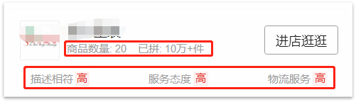
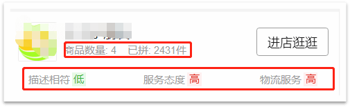
反之，如果店铺评分有一项显示为低，那么需要参考其他维度来进行综合判断。
商品评分反映了消费者对商品的认可度和满意度。当你感觉对商品评分的高低拿捏不准时，可以找几个销量比较好或者品牌店铺的商品，看他们的评分为多少，从而对目标商品的靠谱程度做一个衡量。
拿女士打底裤来举例，首先在公众号里找几款品牌店铺并且销量比较高的打底裤，如图所示。
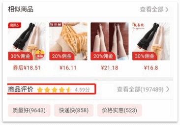
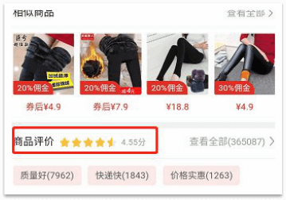
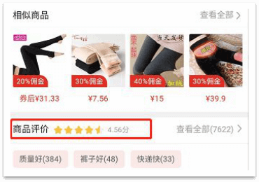
通过以上几个商品可以看出，女士打底裤的商品评分基本在4.5以上，那么可以推断：在选女士打底裤的时候，如果该商品评分在4.5以上，一般是比较靠谱的，以此类推。
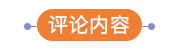
当你刚刚看好一款商品，担忧实际收到的商品与描述不一致时，可以点开商品评价，看看已经购买过的买家是如何描述的。具体内容包括文字和图片，这些真实评价对您的选品还是有很强的参考意义哒~
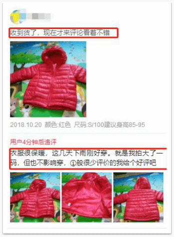
评论数量越高，那么评论内容则更具参考意义。一个商品评论中，总共有10条评论给予产品高评价和总共有1000条评论给予产品高评价，两种情景下，你更愿意相信哪一种呢？答案是显而易见的。
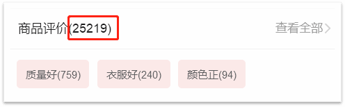
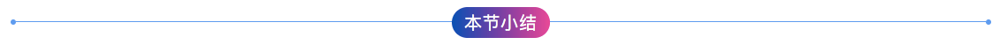
本节主要给大家介绍了如何挑选称心如意的优质商品，其他精彩内容记得关注公众号中的【推手学堂】每天学习一点点，快速开启躺赚模式！